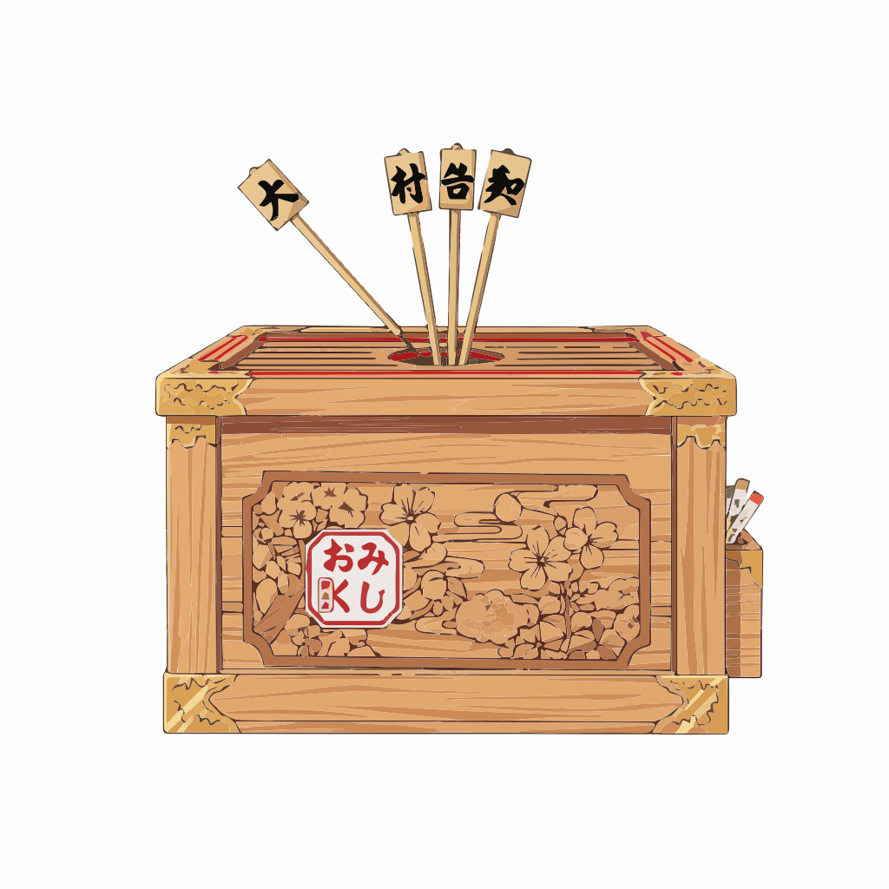

タップするとおみくじが引けます Tap to draw your omikuji (fortune).

おみくじ
(??? | ???)
??
読み: ???
意味: ???
縁
データエラーが発生しました。
Data error occurred.
本日のおみくじは終了しました。リセットは正午（12時）です。 Today's omikuji draw is complete. It resets at noon (12:00 PM JST).
YouTube / Instagram / TikTok
New posts & mini lessons are here.